class: center, middle # EE568-Selected Topics in Electrical Machines ## Ozan Keysan [keysan.me](http://keysan.me) Office: C-113 <span class="meta">•</span> Tel: 210 7586 --- # Windings of Electrical Machines -- <img src="https://www.menzel-motors.com/fileadmin/user_upload/Service/Wicklung/motor_winding-04_web.jpg" alt="Drawing" style="width: 800px;"> ### [Bobinaj](https://www.youtube.com/watch?v=qnU_AFy3ML0), [Pakistan Machine Winding Shop](https://www.youtube.com/watch?v=5YTbkETpZN8) --- # Roles of Windings in Electrical Machines --- # Armature Winding: <img src="http://4.bp.blogspot.com/-lLSSvpP-1aE/UM8uxA0e5pI/AAAAAAAAAI0/6C1VMNdVKsg/s320/commutator.jpg" alt="Drawing" style="width: 400px;"> -- ## Power-producing winding of an electrical machine -- ## Can be on -- the rotor (DC machines), -- or on the stator (synchronous machines) --- # Field (Magnetizing) Winding: -- ## Creates the magnetic field required for energy conversion. -- ## Not all machines have a field winding (i.e. PM machines, reluctance machines) --- # Field (Magnetizing) Winding: ## Can be on the stator: Field winding of a DC machine <img src="http://www.gef.com.my/images/DC_Field_Coil_Winding_After_Service_Re-varnish.jpg" alt="Drawing" style="width: 500px;"> --- # Field (Magnetizing) Winding: ## Can be on the rotor: Synchronous Machine -- ## Salient Pole Rotor <img src="http://www.kencoil.com/wp-content/uploads/2017/03/39b.jpg" alt="Drawing" style="width: 600px;"> --- # Field (Magnetizing) Winding: ## Can be on the rotor: Synchronous Machine -- ## Cylindrical Rotor <img src="https://3.bp.blogspot.com/-yB8dCzX2duw/V4t-BfncMFI/AAAAAAAABiY/cS_7dqlDz7kVDXQtMojGfpnhFeUQ5Y4AwCK4B/s400/rotor%2Bof%2Ban%2Balternator.jpg" alt="Drawing" style="width: 800px;"> --- # Rotating Field Windings -- ### In Induction (asynchronous) machines, windings both creates field and performs energy conversion, so it is slightly differs from armature windings by definition -- <img src="https://qph.fs.quoracdn.net/main-qimg-fb915069a5d2c4638e6e185916b77f7e" alt="Drawing" style="width: 500px;"> --- # Rotating Field Windings ## Induction Motor Rotor Side: -- ## Squirrel-Cage Rotor <img src="https://www.researchgate.net/profile/Mohammed_Therib/publication/320799573/figure/fig1/AS:556180796657664@1509615243458/Squirrel-Cage-Rotor.png" alt="Drawing" style="width: 800px;"> --- ## Squirrel-Cage Rotor 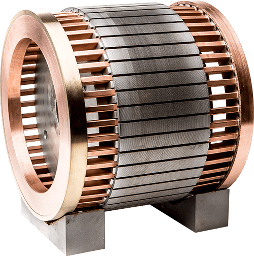 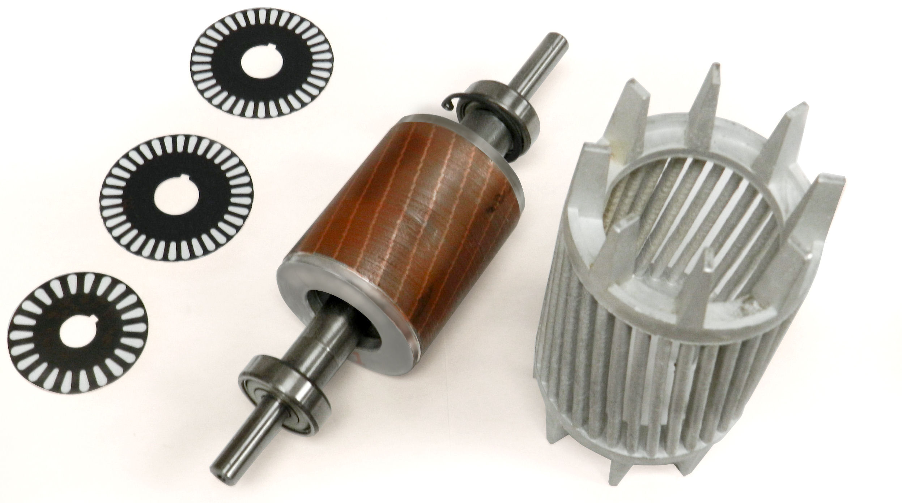 ### Can be made from copper or aluminium. Coil ends are short-circuited. --- # Rotating Field Windings ## Wound Rotor Induction Machine -- <img src="https://www.industrial-electronics.com/images/imc7e_44-1.jpg" alt="Drawing" style="width: 600px;"> --- # Damper Winding -- 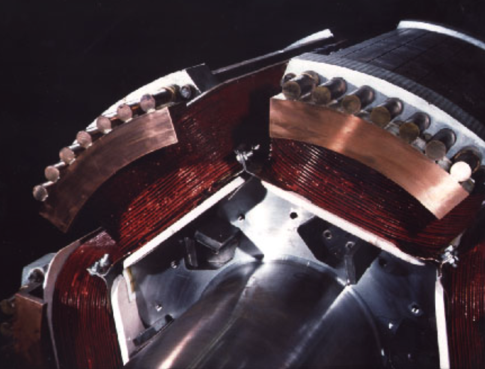 ## [What is it used for](https://instrumentationtools.com/damper-windings-used-synchronous-motors/)? --- # Damper Winding <img src="https://engineeringtutorial.com/wp-content/uploads/2016/04/Electrical-Machines.jpg" alt="Drawing" style="width: 500px;"> ### Helps to self-start of a synchronous machine and Reduces oscillations in transient conditions. ### [61MVA Stator & Rotor Rewinding](https://www.youtube.com/watch?v=ov8KAjxMxlU), [coil manufacturing](https://www.youtube.com/watch?v=Y7T6I1wg7tQ) --- # Other Windings ## Helps to reduce armature reaction - ## [Commutating Windings](http://www.studyelectrical.com/2015/01/compensating-windings-interpoles-dc-generator-motor.html) - ## [Compensating Windings](https://www.quora.com/Electrical-Machines-What-do-interpoles-do-in-DC-motors) (Interpoles) --- # Winding Types 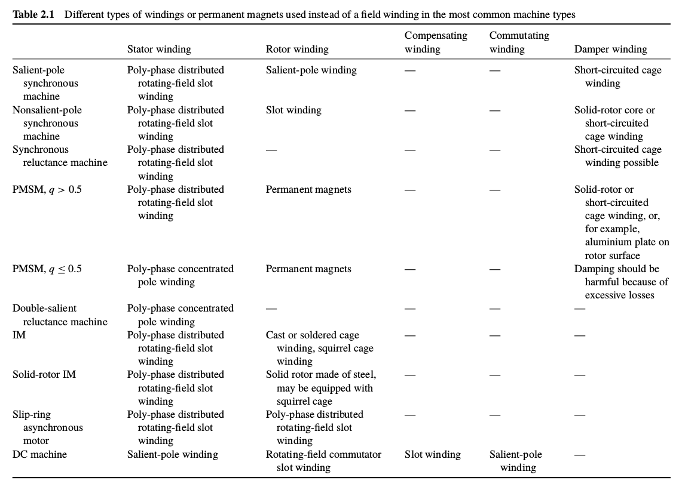 --- # Exercise -- ## Field Winding of a Salient Pole Synchronous Machnie 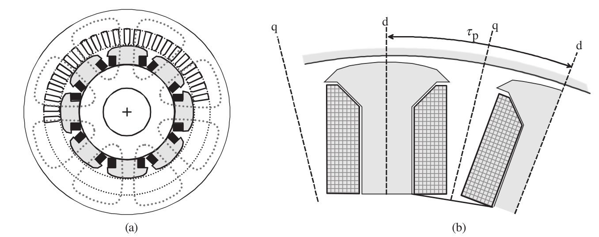 #### Calculate the required field winding current to get Bmax=0.82T, if there are 95 turns per pole. Assume sinusoidal flux density distribution and the minimum airgap distance is 3.5mm --- # Exercise 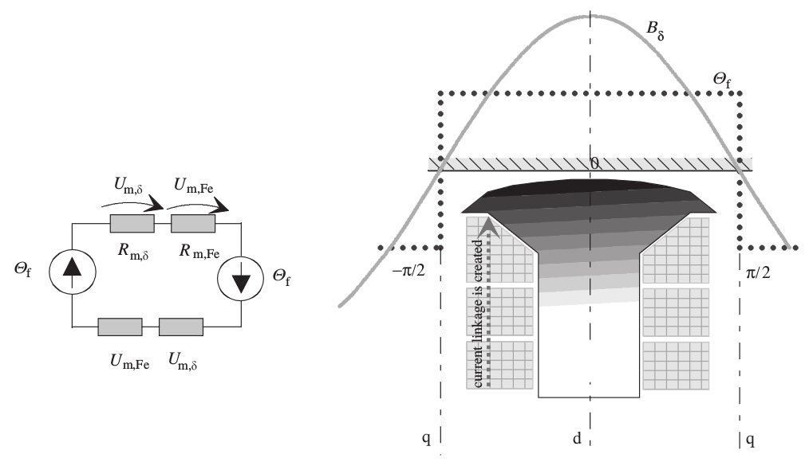 --- # Slot Windings -- 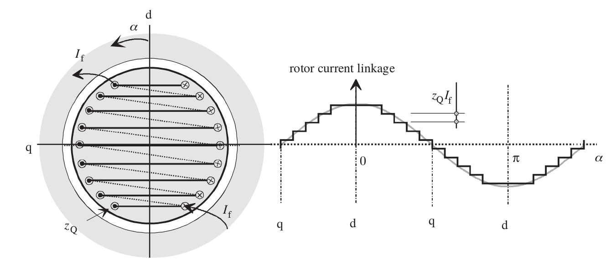 ### Current Linkage distribution in a two-pole cylindrical winding. #### \\(z_Q\\) conductors in each slot with current \\(I_f\\) --- ### Some Definitions -- ## Pole Pitch: -- ## \\(\tau_p = \dfrac{\pi D}{2p} \\) ###\\(p\\): pole pairs, \\(D\\): air-gap diameter --- ### Some Definitions ## Slot Pitch: -- ## \\(\tau_u = \dfrac{\pi D}{Q} \\) ###\\(Q\\): number of slots -- ## Slot Angle (electrical): -- ### \\(\alpha_u = \dfrac{2\pi}{(Q/p)} \\) --- ### Some Definitions ## Slots per-pole per-phase (q): -- ## \\(q = \dfrac{Q}{2pm} \\) ###\\(m\\): number of phases --- ### Some Definitions ## Slots per-pole per-phase (q): ## If \\(q\\) is integer: -- Integral Slot Winding -- ## If \\(q\\) is fractional: -- Fractional Slot Winding --- # 3-Phase Integral Slot Stator Winding -- ## Simplest case for rotating MMF - ## m = 3 - ## p = 1 - ## q = 1 -- - ## Q = 6 --- ## Simplest case: <img src="./images/ee564/slot_q6.png" alt="Drawing" style="width: 500px;"> --- ## MMF from a single phase -- 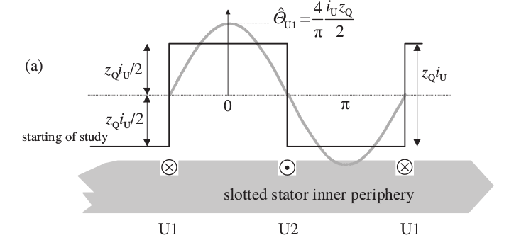 -- ## Peak MMF: \\(\dfrac{4}{\pi}\dfrac{i_U z_Q}{2}\\) --- ## MMF from three phase <img src="./images/ee564/3ph_mmf1.png" alt="Drawing" style="width: 700px;"> --- ## MMF from three phase <img src="./images/ee564/3ph_mmf2.png" alt="Drawing" style="width: 750px;"> --- # Three Phase AC: Rotating MMF <img src="http://www.ece.umn.edu/users/riaz/animations/sinwaves0.gif" alt="Drawing" style="width: 750px;"/> --- # Three Phase AC: Rotating MMF <img src="http://www.ece.umn.edu/users/riaz/animations/vecmovieslow.gif" alt="Drawing" style="width: 500px;"/> --- # Three Phase AC: Rotating MMF <img src="http://www.ece.umn.edu/users/riaz/animations/sinvec.gif" alt="Drawing" style="width: 800px;"/> ### Derivation left as an exercise! --- ## Manufacturing of Coils <img src="https://en.partzsch.de/files/Produktspektrum/Staenderwicklungen/Formspulen/galerie/formspulen_6.jpg" alt="Drawing" style="width: 300px;"/> ### Chevy Spark EV [Motor Manufacturing](https://www.caranddriver.com/news/a18744950/we-build-the-chevy-spark-evs-ac-permanent-magnet-motor/) ### [Disributed winding schematic](https://www.researchgate.net/profile/Jakob_Igelspacher/publication/241174581/figure/fig3/AS:340780838342662@1458259891354/Fig-4-Schematic-example-of-a-distributed-winding-of-an-axial-flux-induction-machine.jpg) ### [Preformed coils](https://www.heinrich-schuemann.de/ankerformspulen-200.html), [Preformed coils-2](https://www.heinrich-schuemann.de/files/uploads/Produkte/Elektromaschinenbau/ankerformspulen/anker-w1p.jpg) ### [Coils in the stator](https://empoweringpumps.com/sulzer-hydro-generator-refurbishment-increases-output-by-15/), [Coils in the stator-2](https://4.imimg.com/data4/YY/YY/GLADMIN-/wp-content-uploads-2015-11-diamond_coils_03-500x500.jpg) --- # Distributed Winding ### Many coils are connected in series and distributed over many slot to achine a more sinusoidal MMF distribution -- <img src="https://raw.githubusercontent.com/ozank/ozank.github.io/master/presentations/images/distributed_coil.png" alt="Drawing" style="width: 400px;"/> --- # Distributed Winding MMF ### Let's calculate the MMF with the distributed coil: -- <img src="https://archive.cnx.org/resources/8cbc00b4366fcb581988511a2b55b5bdee858576/graphics14.png" alt="Drawing" style="width: 600px;"/> --- # Distributed Winding Manufacturing ###Videos - [Production of electric machines](https://www.youtube.com/watch?v=5Mu42TzHy8M) (T=6:00) - [Rewinding a Large Motor](https://www.youtube.com/watch?v=_65mXQ-GNVM) (T=0:20) - [BMW Electric Motor - Drive](https://www.youtube.com/watch?v=Qktx5yx1Bjw) - [Induction Motors: Overhauling a Motor](https://www.youtube.com/watch?v=yPvYd03cKJU) --- ## Full-Pitch Coil ? -- <img src="https://www.electrical4u.com/wp-content/uploads/2013/04/full-pitched-short-pitched-winding-11.10.13.png" alt="Drawing" style="width: 800px;"/> --- ## Full-Pitch Coil ? <img src="./images/full_pitch.png" alt="Drawing" style="width: 700px;"/> ### (a)Full-pitched coil, (b) Short-pitched coil --- # Winding Factors ### Constants related to estimate characteristics of MMF and voltage of windings. ### An easier method for analytical calculations -- - ## Distribution Factor (\\(k_d\\)) -- - ## Pitch Factor (\\(k_p\\)) --- # Distribution Factor <img src="https://raw.githubusercontent.com/ozank/ozank.github.io/master/presentations/images/distributed_coil.png" alt="Drawing" style="width: 500px;"/> --- # Distribution Factor ## Vector sum of voltages in a distributed coil is less than the algebraic sum of the voltage in each coil. -- ## \\(k_d = \dfrac{\mathrm{Vector\,Sum\,of\,Voltages}}{\mathrm{Algebraic\,Sum\,of\,Voltages}}\\) --- # Distribution Factor ### Q1: What is the distribution factor of a concentrated coil? -- ### Q2: What is the distribution factor of two coils seperated by \\(\pi/3\\)? -- ### Q3: What is the distribution factor of three coils seperated by \\(\pi/6\\)? -- ### Generalized equation --- # Distribution Factor ## \\(k_d = \dfrac{sin(q \dfrac{\alpha}{2})}{q sin(\dfrac{\alpha}{2})}\\) ## \\(q\\): Number of coils ## \\(\alpha\\): Angle between each coil --- # Pitch-Factor -- ## Review of Definitions: - # Full-pitched (= \\(\pi\\) electrical) -- - # Under-pitched (< \\(\pi\\) electrical) -- - # Over-pitched (> \\(\pi\\) electrical) --- ## A 2-pole machine with sinusoidal \\(B_{gap}\\) <img src="https://raw.githubusercontent.com/ozank/ozank.github.io/master/presentations/images/2pole_mmf.jpg" alt="Drawing" style="width: 450px;"/> --- ## A 2-pole machine with sinusoidal \\(B_{gap}\\) <img src="https://raw.githubusercontent.com/ozank/ozank.github.io/master/presentations/images/2pole_voltage.jpg" alt="Drawing" style="width: 800px;"/> --- # Full-pitched vs Fractional-pitched Coil - ## Full-pitch = 180 degrees (\\(\pi\\)) -- - ## Under pitch < 180 degrees (\\(\pi\\)) -- - ## \\(V\_{full-pitch} > V\_{under-pitch}\\) -- - # If so, what is the point? --- # A big Parenthesis ## Fourier Series -- > ## All waveforms, no matter what you scribble or observe in the universe, are actually just the sum of simple sinusoids of different frequencies. --- # Fourier Series  [Fourier Series using Circles](https://www.youtube.com/watch?v=LznjC4Lo7lE), [Complex Orbits](https://www.youtube.com/watch?v=QVuU2YCwHjw), [Useful applets](http://www.falstad.com/fourier), [Fourier examples](http://ptolemy.eecs.berkeley.edu/eecs20/week8/examples.html) [More Useful Links on Fourier Series](http://keysan.me/explained/) --- # Fourier Series <a href="https://www.google.com/search?q=plot+(sin(x)%2B0.25*sin(3*x)%2B0.1*sin(5*x))">Google Plot</a> -- - ## Let's see what happens with a 2/3 under pitched coil? -- - ## Under-Pitched coils are very useful for the elimination of harmonics --- #Pitch Factor ## Voltage in a short-pitched coil is less than a full-pitched coil ## \\(k_p = \dfrac{\mathrm{Short-Pitched\;Coil\;Flux}}{\mathrm{Full-Pitched\;Coil\;Flux}}\\) --- #Pitch Factor # \\(k_p = sin(\dfrac{\lambda}{2})\\) # \\(\lambda\\): Coil-pitch in electrical degrees --- # Pitch and Distribution Factor for Harmonics ## For harmonic number n: ## \\(k_p(n) = sin(\dfrac{n\lambda}{2})\\) -- ## \\(k_d(n) = \dfrac{sin(q n \dfrac{\alpha}{2})}{q sin(\dfrac{n\alpha}{2})}\\) --- # Winding Factor: ## is the combination of distribution and pitch factor -- #\\(k_w = k_d \times k_p\\) -- ## gives an idea about the magnitude of the coil voltage (or MMF) compared to concentrated and full-pitched winding. --- # Group Exercise -- ### A rotating magnetic flux created by a 3-ph 50 Hz, 600 rpm alternator has a distribution of magnetic flux density: -- ### \\(B(\theta)=\hat{B}_1 sin(\theta)+\hat{B}_3 sin(3\theta)+\hat{B}_5sin(5\theta)\\) -- ### \\(B(\theta)=0.9sin(\theta)+0.25 sin(3\theta)+0.18sin(5\theta)\\) --- # Group Exercise ## The machine has: - ### 180 slots, double-layer winding, Y-connected -- - ### Each coil has 3 turns with a span of 15 slots -- - ### Armature diameter = 135 cm -- - ### Effective axial length = 0.5 m --- # Group Exercise -- ## Draw the winding diagram -- ## Calculate the MMF for: -- - ### ia=1 A, ib=-0.5 A, ic=-0.5A -- - ### ia= -0.5A, ib=1 A, ic=-0.5A --- # Group Exercise ## Calculate: -- - ## Number of poles, pole area -- - ## Fundamental flux per-pole -- - ## Winding and distribution factors for each winding -- - ## Induced voltage rms per phase and line-to-line --- ## Now find the RMS of phase voltage and line voltages. -- ### \\(V\_{rms(i)} = \dfrac{1}{\sqrt{2}} 2\pi f\_i k\_{w(i)} N\_{ph} \Phi\_{(i)} \\) which is equal to: -- ### \\(V\_{rms(i)} = 4.44 f\_i k\_{w(i)} N\_{ph} \Phi\_{(i)} \\) ### \\(i\\): harmonic order, \\(\quad f\\): frequency ### \\(k_w\\): winding factor ### \\(N_{ph}\\): number of coils per phase ### \\(\Phi\\): flux per pole. --- # True RMS ### RMS values of all harmonics # \\(\sqrt{\sum{V_{rms-i}^2}}\\) ### For fundamental, 3rd and 5th harmonics # True RMS = \\(\sqrt{V\_{1}^2+V\_{3}^2+V\_{5}^2}\\) --- # Induced Voltages ## V1=4482 V ## V3=613 V ## V5=49.5 V ## Waveform of the [total phase voltage](https://www.google.com.tr/search?ei=67W3WqSJDMOv6ATzqZ_QDQ&q=plot+4482*sqrt%282%29*sin%28x%29+-+613*sqrt%282%29*sin%283*x%29+%2B+49.5*sqrt%282%29*sin%285*x%29&oq=plot+4482*sqrt%282%29*sin%28x%29+-+613*sqrt%282%29*sin%283*x%29+%2B+49.5*sqrt%282%29*sin%285*x%29&gs_l=psy-ab.3...10186.25518.0.26977.18.18.0.0.0.0.317.2643.0j12j3j1.16.0....0...1c.1.64.psy-ab..2.0.0....0.DBXGbFsm7D8) --- # Line Voltage ## \\(V\_{BA}=V\_{Bn}-V\_{An}\\) ## No 3rd Voltage Harmonics in Y-connected line-to-line voltages ## Waveform of the [line voltage](https://www.google.com.tr/search?ei=R7a3WoqpNszO6AS415iIDg&q=plot+4482*sqrt%286%29*sin%28x%29+%2B+49.5*sqrt%286%29*sin%285*x%29&oq=plot+4482*sqrt%286%29*sin%28x%29+%2B+49.5*sqrt%286%29*sin%285*x%29&gs_l=psy-ab.3...4540.15170.0.25670.9.9.0.0.0.0.179.1246.0j9.9.0....0...1c.1.64.psy-ab..0.0.0....0.8eSFbs9SpcI) --- # Fractional Slot Windings -- ### Slots-per-pole-per-phase (q) is fractional -- - ### Gives more choice in winding design -- - ### Voltage waveform can be improved by eliminating certain harmonics -- - ### Vast possibilities, but not every possibility produces a symmetrical rotating MMF --- ## Fractional Slot Example -- ## Consider a 10-pole machine -- ## What can be the number of slots? -- - ## 30 slots? q= -- 1 -- - ## 60 slots? q= -- 2 - ## How about 42 slots? -- ## q = 42/(10*3) = 7/5 --- ## 42 slot, 10 pole 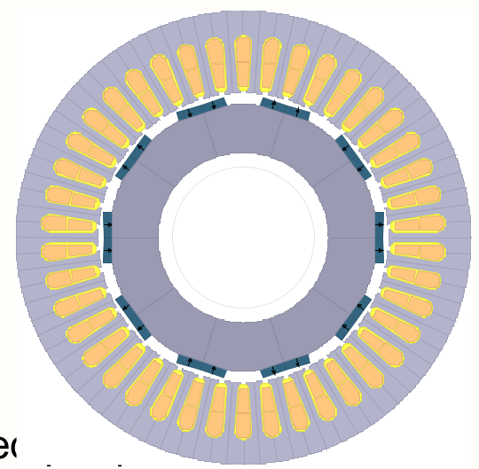 --- ## 42 slot, 10 pole ## Phase shift between coils? -- ### \\(360*(10/2)/42=42.85^o\\) -- ### Let's choose a coil span of 4 slots. Coil pitch? -- ### \\(42.85*4 = 171.5^o\\), Pitch factor? -- ### \\(sin(171.5/2) = 0.997\\) --- # Why Fractional Winding? ## Integer Slot: 4 pole, 12 slot 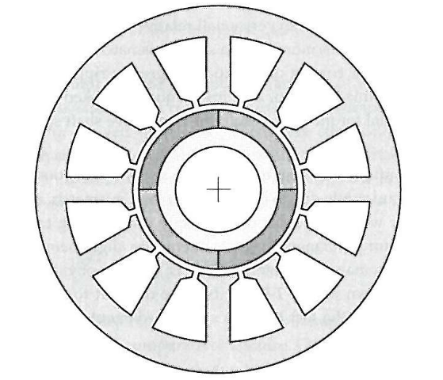 --- # Why Fractional Winding? ## Can you guess the magnitude of cogging torque? --- # Why Fractional Winding? ## Can you guess the magnitude of cogging torque? 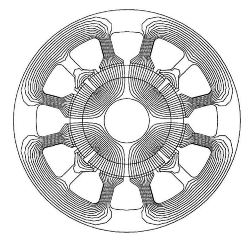 --- # How can you reduce cogging torque? ## Skewing is an option, but increases phase resistance 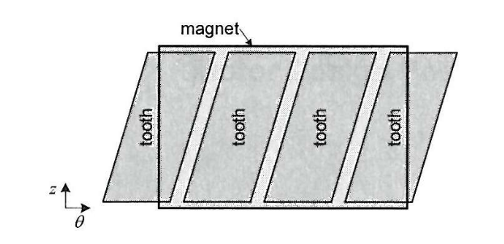 --- # Why Fractional Winding? ## Repeat the same thing with 4 pole, 15 slot? 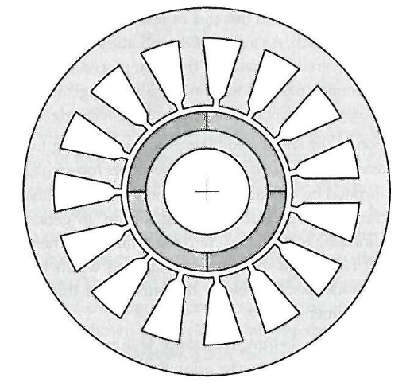 --- # Why Fractional Winding? ## Even more poles: 10 pole, 12 slot? 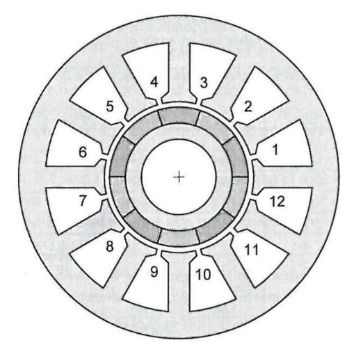 --- ## Conditions for Symmetrical Rotating MMF -- ### 1- Number of coils per phase winding should be an integer -- ### Single-layer windings: ### \\(\dfrac{Q}{2m} = pq \in N\\) -- ### Double-layer windings: ### \\(\dfrac{Q}{m} = 2pq \in N\\) ### Easier to achieve symmetrical MMF with double-layer windings --- ## Conditions for Symmetrical Rotating MMF -- ### 2- The angle between phase windings (\\(\alpha\_{ph}\\)) should be an integer multiple of slot angle \\(\alpha_z\\) -- ### Normal Systems: ### \\(\dfrac{\alpha\_{ph}}{\alpha\_{z}}=\dfrac{Q}{mt} \in N\\) ### t: largest common divider of Q and p ### Reading Assignment Pyrhonen Sections 2-9:2-12 --- # Winding Voltage Phasor Diagrams 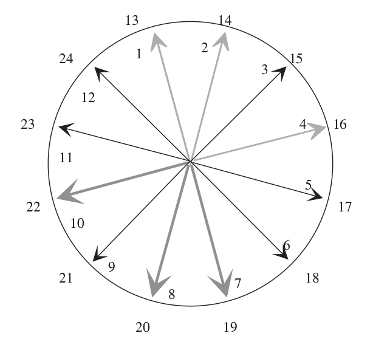 --- # Voltage induced in a straight wire? <img src="http://www.solitaryroad.com/c1048/ole3.gif" alt="Drawing" style="width: 450px;"> --- # Voltage induced in a straight wire? # \\(e = Blv\\) ## v: linear velocity --- # Winding Voltage Phasor Diagrams ## 2 pole, 3phase, 12 slot machine -- 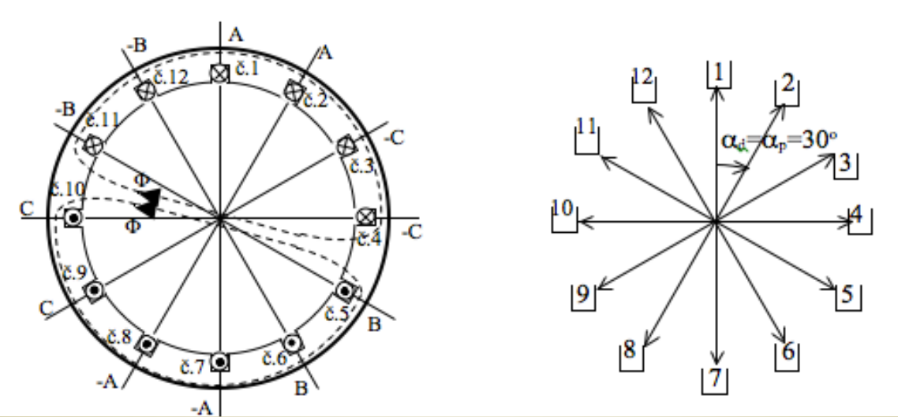 --- # Winding Voltage Phasor Diagrams ## Induced Phase Voltages -- 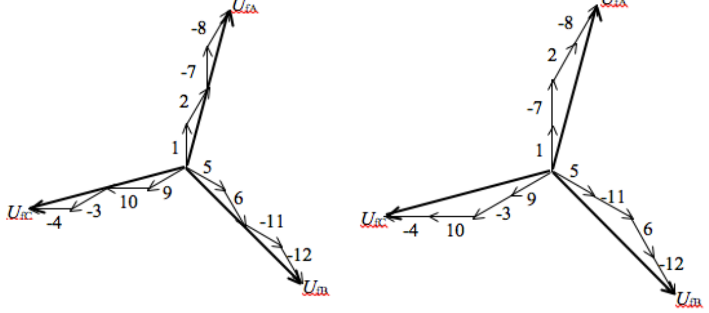 --- ## Two possible ways to put the coils -- ## Lap winding -- 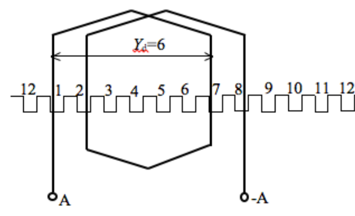 ### Most common type --- ## Concentric winding -- 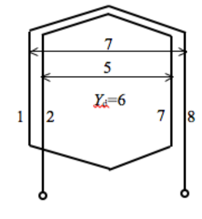 ### They have exactly the same voltage waveforms --- ## Fractional Slot Example: -- ## 12 slot, 10 pole, single layer -- 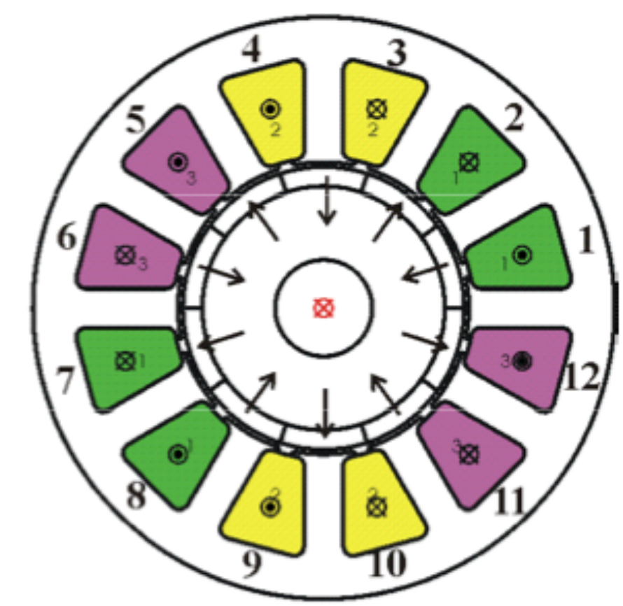 --- ## Fractional Slot Example: -- ### \\(\alpha_u=\\) -- \\(360*5/12=150^o\\) -- <img src="./images/ee564/12slot_10pole2.png" alt="Drawing" style="width: 400px;"> --- ## Fractional Slot Example: ### Phase Induced Voltage 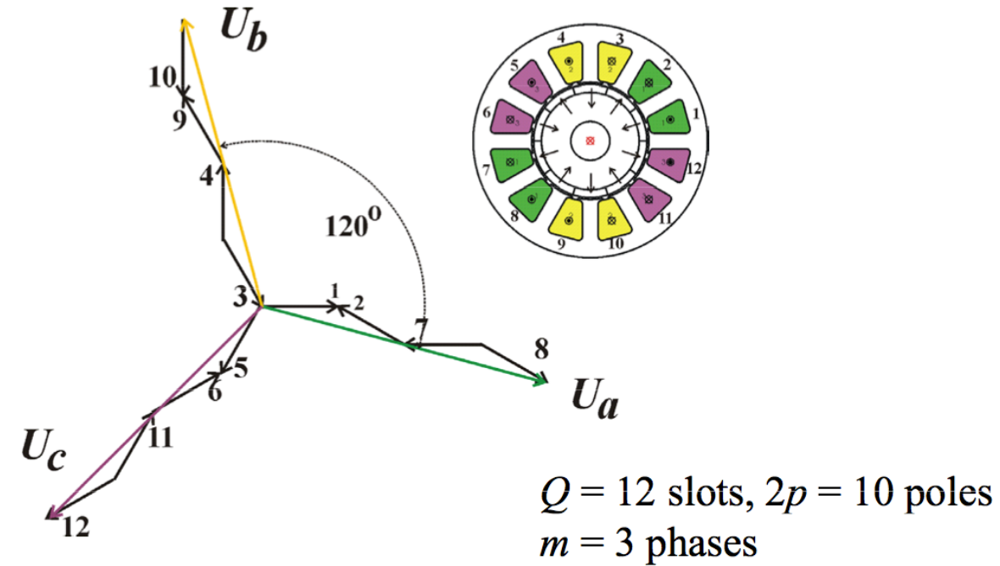 --- # Example (2-16) ### Create a voltage phasor diagram of a single layer integral slot winding for which Q=36, p=2, m=3 -- 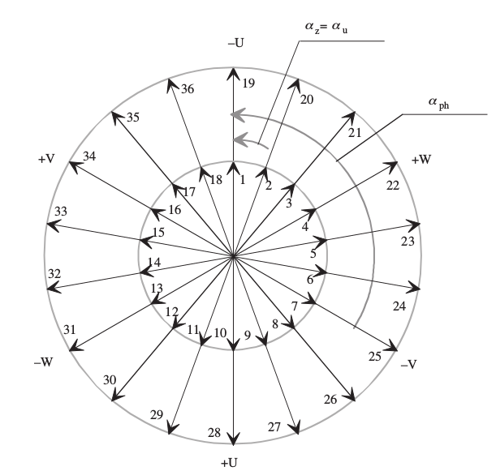 --- #Fractional Single Layer vs Double Layer # Q=6, m=3, p=2, q=1/2 -- 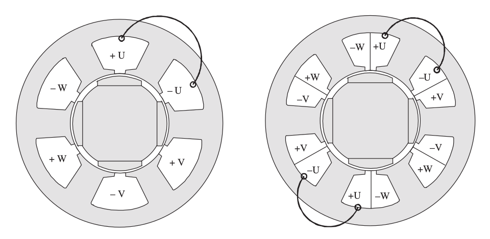 --- # Winding Factor Tables ## Single Layer Winding 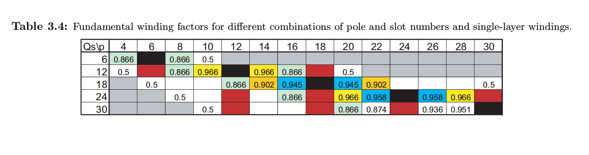 --- # Winding Factor Tables ## Double Layer Winding 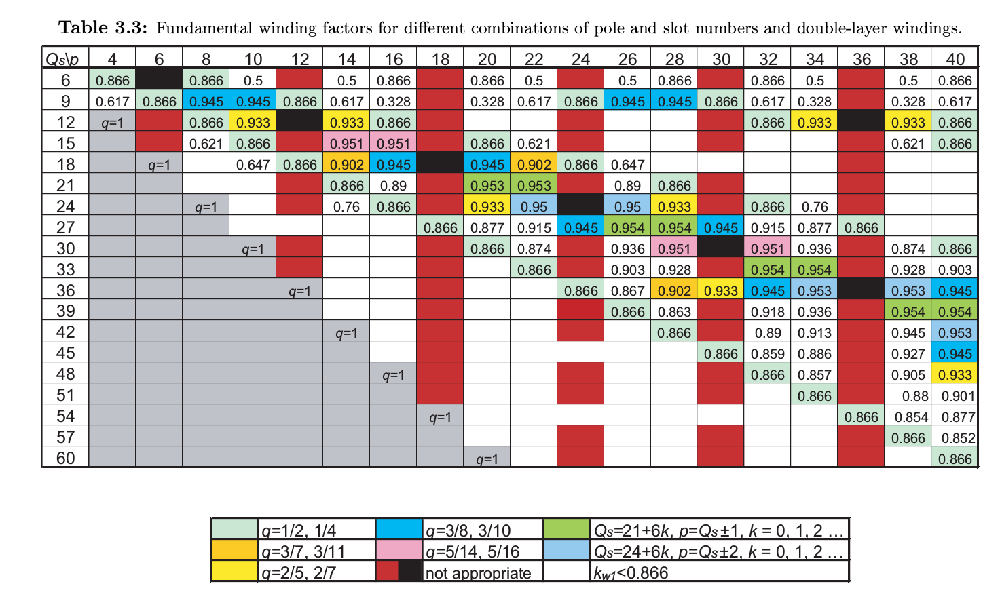 --- # Winding Manufacturing ## Slot Layout -- 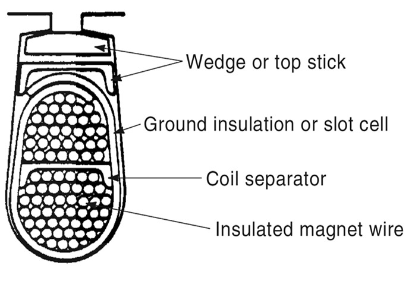 --- # Random Wound Coils 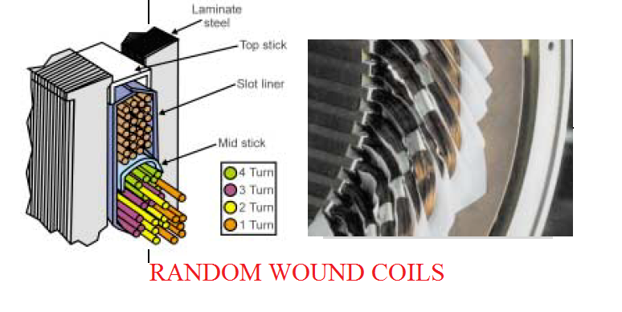 ### [Random wound coil insertion](https://www.youtube.com/watch?v=5P6YVi2mB6Q) --- # Form Wound Coils <img src="./images/ee564/form_wound_coil.png" alt="Drawing" style="width: 800px;"> ### [Enercon Generator](https://www.youtube.com/watch?v=MgGk2WvK80M), (8:28) --- # Semi-closed vs Open Slot 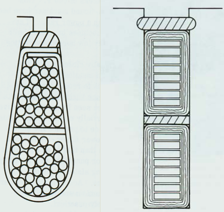 --- # Fill Factor Comparison -- ## Random Wound Coil 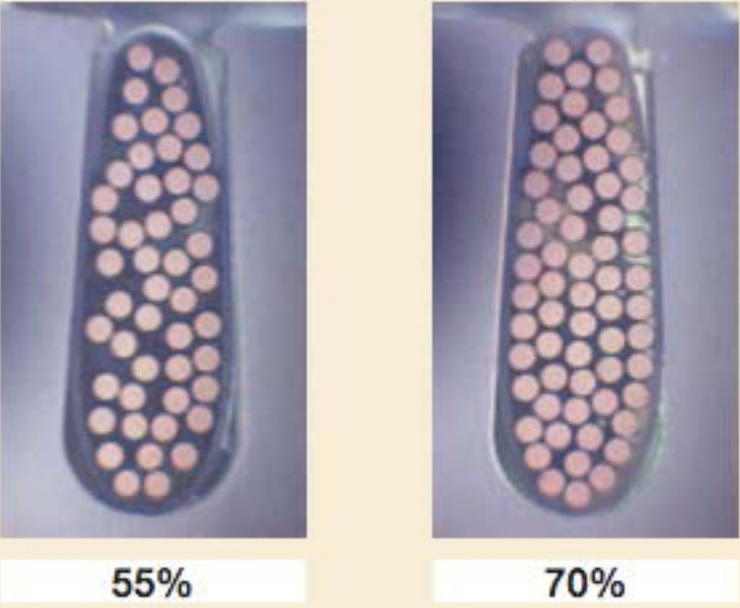 --- # Fill Factor Comparison -- ## Random Wound Coil --- # Fill Factor Comparison -- ## Form Wound Coil 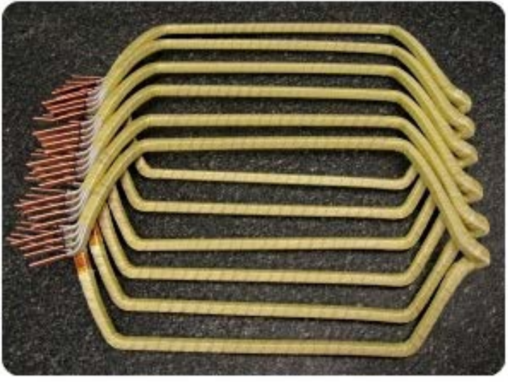 ## Up to 65% fill factor --- ## High Slot Fill Examples 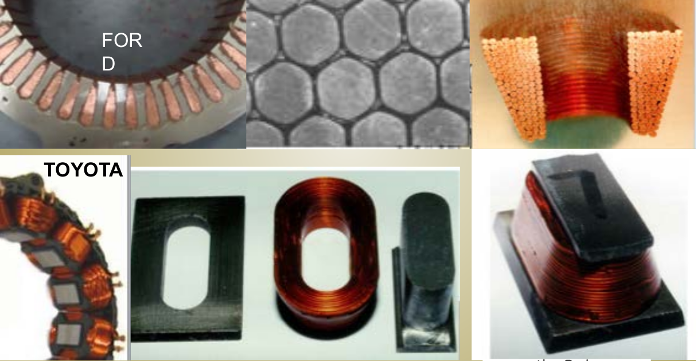 --- # Needle Winding -- 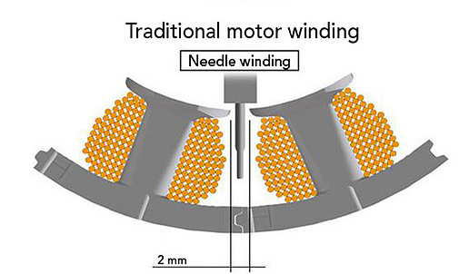 ### [BLDC winding](https://www.youtube.com/watch?v=p6ezfPZCSKI), [High Speed Needle Winding](https://www.youtube.com/watch?v=BHUujXg1rf0), [Direct drive winding](https://www.youtube.com/watch?v=-Ao6axiOVRw) --- # Open Pole Winding -- 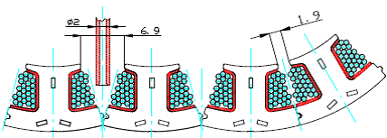 ### [Chained Poles](https://www.youtube.com/watch?v=-_ZkQh8fF5w) --- ## Self Bonding Wire <img src="https://2.wlimg.com/product_images/bc-full/dir_34/993310/self-bonding-wire-1377157.jpg" alt="Drawing" style="width: 800px;"> --- # Winding Examples --- 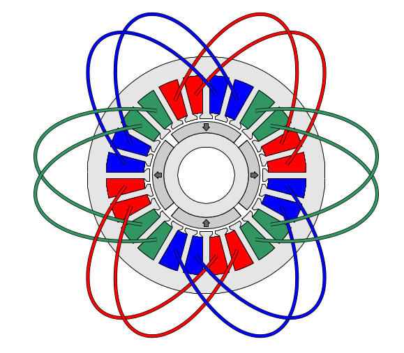 -- ## Q=24, p=2, -- q=2, -- Single layer, -- integral slot, distributed winding --- 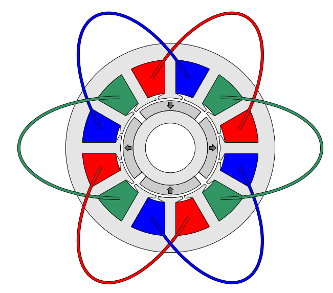 -- ## Q=12, p=2, -- q=1, -- Single layer, -- integral slot, concentrated winding, --- <img src="./images/ee564/winding_ex3.png" alt="Drawing" style="width: 500px;"> -- ## Q=18, p=2, -- q=3/2, -- Double layer, -- fractional slot winding, --- 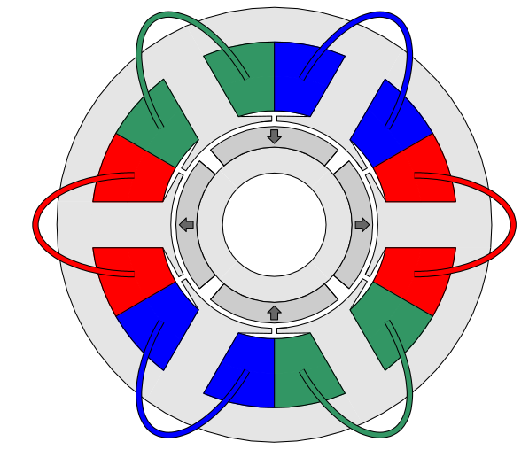 -- ## Q=6, p=2, -- q=1/2, -- Double layer, -- fractional slot concentrated winding, --- 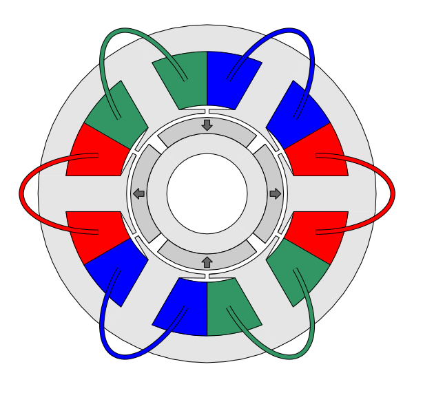 -- ## Q=6, p=2, -- q=1/2, -- double layer, -- fractional slot, concentrated winding, --- # Other BLDC Examples: - ## [Infolytica](https://www.infolytica.com/en/applications/ex0144/) --- ## You can download this presentation from: [keysan.me/ee564](http://keysan.me/ee564)